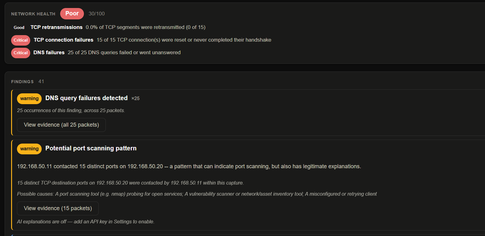
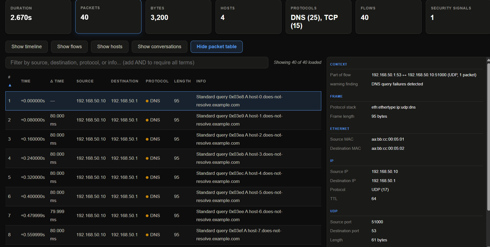
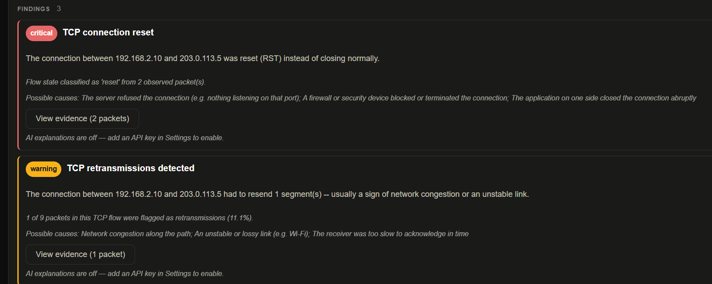
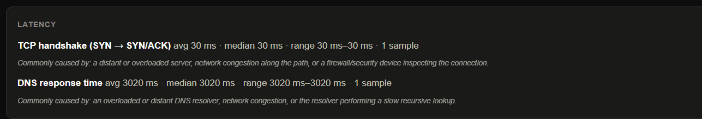

Open source · Windows & Linux
Reads your network traffic like Wireshark. Explains it like a person.
A health score, evidence-linked findings, and automatic security detection — every conclusion traceable back to the exact packets behind it. Built on tshark's own dissectors, not a reimplementation.

Never a black-box number — every factor that fed the score is shown alongside it, with its own severity and plain-language reason.
Every finding names the exact packets behind it and lists honest possible causes — including the benign ones — instead of a bare alarm.
Port scans, beacon-like timing, large outbound transfers, suspicious DNS query names, and asymmetric-routing signals — flagged automatically, medium confidence, never overclaimed.
Click a flow to see the full exchange, direction-colored — with HTTP dechunking, a hex view, and a jump straight from any chunk to the packet that carried it.
AI explanations and IP-reputation lookups are opt-in and off by default. Enable them with your own API key, and only the specific item you check is ever sent.

Every packet, in context. The expert-view packet table stays available — sortable, filterable, with delta timing between rows — and clicking any packet shows a Context panel linking it straight back to the flow and finding it's evidence for.

Every finding lists what it could mean — including the boring explanation. A reset connection and a retransmission, each with the exact packets behind it and possible causes that don't jump to conclusions.

Delay, broken down by cause. TCP handshake time and DNS response time measured separately, so a slow page load isn't a mystery.
Or the .msi. Requires Wireshark installed separately — Tracelucid drives tshark rather than bundling it.
Also needs tshark and your user in the wireshark group for live capture.
Something broken, or behaving unexpectedly? Open an issue — tracked, searchable, and visible to anyone hitting the same thing.
Open an issue